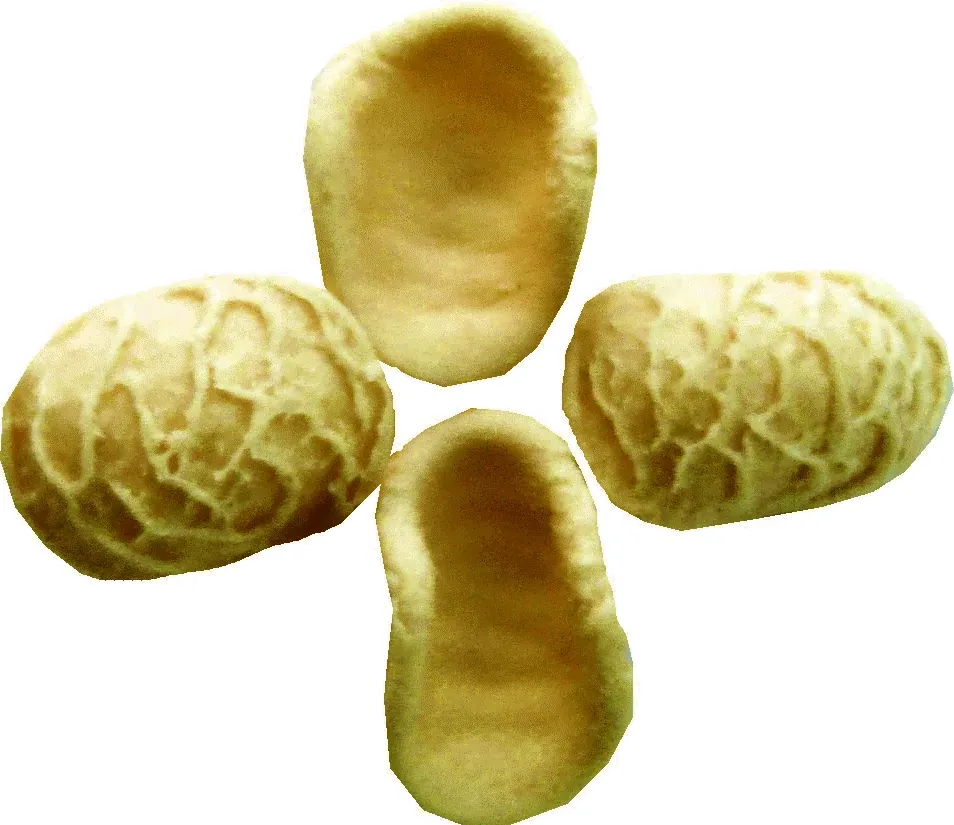
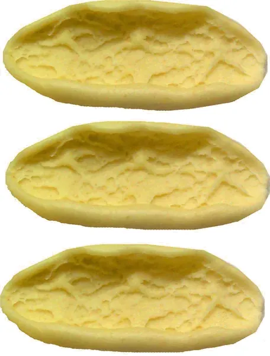
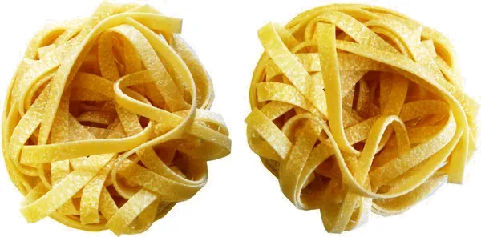
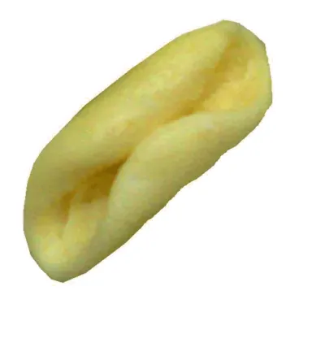
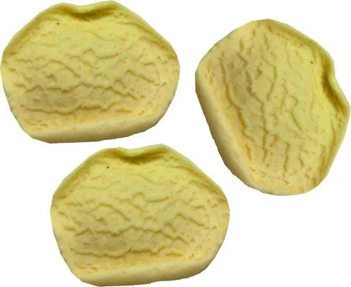
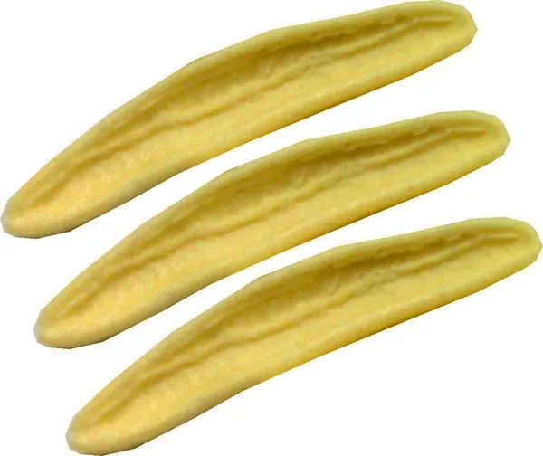
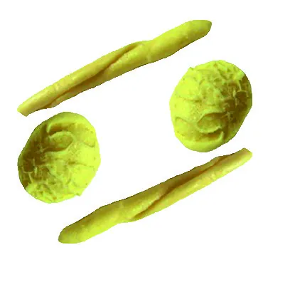
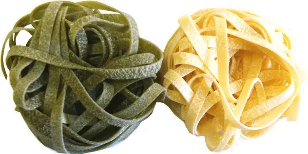
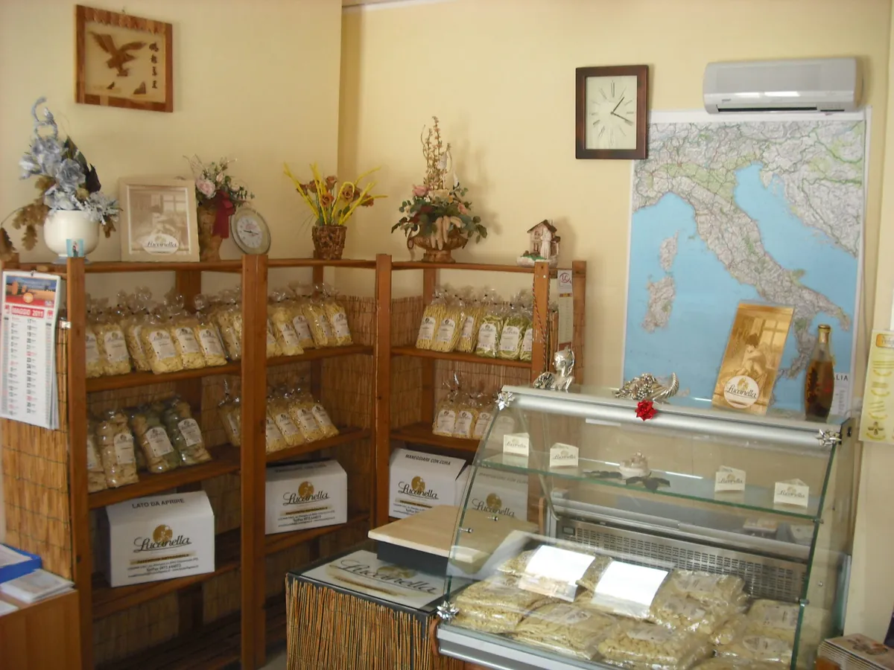

Chiaromonte · Parco Nazionale del Pollino · dal 2005
La pasta della Basilicata, a casa tua.
Formati tipici lucani, freschi e secchi, da grano duro 100% italiano. 500 g a 1,80 €.

Orecchiette fresche500 g · cottura circa 5 minuti1,80 €I reparti
Fresca o secca? Stessi formati, due modi di gustarla.
I più tipici
Formati lucani da provare

Rascatielli1,80 €
Tagliatelle1,80 €
Cavatelli1,80 €
Strascinati1,80 €
Foglie d’ulivo1,80 €
Maritati1,80 €
Tagliatelle paglia e fieno1,80 €Tutti i formati costano 1,80 € la confezione da 500 g; sopra 39,90 € la spedizione in Italia è gratuita.

Chi siamo
Tre giovani lucani e un pastificio nel Pollino.
Lucanella nasce nel 2005 da un’idea di tre giovani imprenditori lucani; dal 2015 è Lucanella S.r.l., guidata da Mario e Pietro Pagano. Semole di grano duro italiane selezionate, metodi artigianali e macchine moderne.
La pasta è venduta in Basilicata, in tutta Italia e in Europa (Francia, Germania, Spagna); il pastificio partecipa a fiere come Cibus e il Salone del Gusto.
La nostra storiaDicono di noi
Le recensioni dei clienti
Ottima qualità di pasta fresca. Il Top! A+++++Prospero Oliveto · recensione Google del 16 settembre 2025
Ottimo pastificio, prodotti stupendi, e proprietari disponibiliStefano De Canio · recensione Google del 27 aprile 2025
Ottima pasta fresca, fatta come in casa, complimentiGiuseppe De Salvo · recensione Google del 9 novembre 2024
Recensioni Google pubblicate sul sito lucanellapasta.com (widget Trustindex).
Prima di ordinare
Spedizioni chiare
Le spese si calcolano nel carrello in base alla quantità e sono gratuite in Italia sopra 39,90 €. Spediamo in tutta Italia (esclusi Vaticano e San Marino); per l’Europa si chiede un preventivo via email.
Spedizioni, pagamenti e resiQuanto costa la spedizione?
È gratuita in Italia per ordini superiori a 39,90 €. Sotto questa cifra il costo dipende dalla quantità e si vede nel carrello prima di pagare.
Quando arriva l’ordine?
Il sito indica la spedizione nel minor tempo possibile (5-10 giorni lavorativi) e la consegna in circa 24/48 ore da quando il corriere prende in carico il pacco.
Come si conserva la pasta fresca?
In frigorifero, a massimo 5 °C: la confezione in atmosfera protettiva dura fino a 120 giorni. La pasta secca si conserva in dispensa fino a 24 mesi.
Posso pagare alla consegna?
Sì, in contanti al corriere con un supplemento di 3,00 €. In alternativa PayPal, carta (anche senza conto PayPal) o bonifico anticipato.